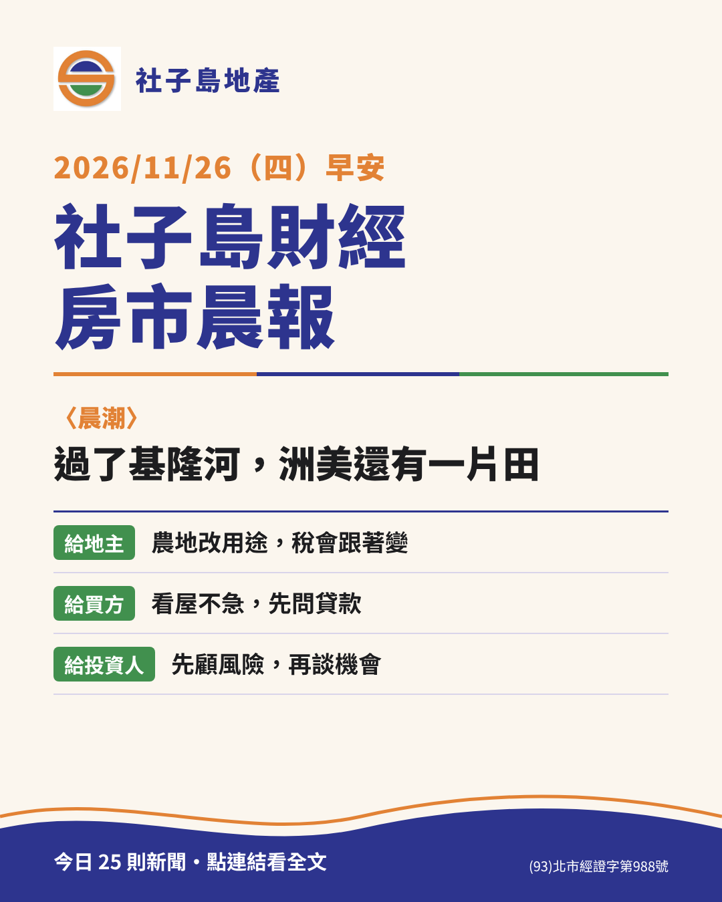

2026/11/26 (四) 早安
社子島財經房市晨報｜過了基隆河，洲美還有一片田
前天才大漲三千多點，昨天台股又重挫 1,926 點，新台幣也貶破 33 元；股市一天一個樣，土地的事卻得一步一步來。同一天，遠雄公告和北投 24 位地主簽下合建，地主平均分回約四成二到四成八，今天的〈今日一題〉就來拆這個比例；〈晨潮〉則陪阿公過河，去看洲美那片田。週四早上，25 則新聞，點標題就能讀原文。
〈潮汐表〉今天的三道潮水
- 給地主地價稅 11/30 截止；農地若改作非農用，次年起改課一般地價稅。
- 給買方股匯雙殺、外資撤出，看屋不必急，貸款條件先問清楚。
- 給投資人大漲三千、隔天大跌近兩千，先顧好風險，再談機會。
〈晨潮〉週邊三區
過了基隆河，洲美還有一片田
前天在濕地邊，阿公望著基隆河對岸問我們：「洲美的田，這馬猶咧種啥物？以後會按怎？」阿公，那片田還在，而且還在種稻。我們去翻了市府的資料，也讀了在地文史團體的紀錄，說給您聽。
先說洲美這個地方。臺北市鄰里服務網寫著，洲美里舊稱「洲尾」，民國 35 年成立時屬於士林區，民國 79 年行政區調整，才劃進北投區。社子島是兩條河夾出來的沙洲，洲美則在基隆河的另一邊，一個叫洲尾、一個叫浮汕，聽名字就知道，兩邊都是河給的土地。
那片田有多大？臺北市政府 2019 年的關渡平原座談會資料，把關渡、洲美兩塊農業區合計約 477.7 公頃，其中洲美平原農業區約 163.1 公頃。田裡種的主要還是水稻，一年兩收；臺北市最美河川文化推廣協會記錄，這一帶第二期常用「再生稻」，收割後不翻土、不插秧，留下稻頭讓它再長一次，是都市農業省工的做法。秋天走洲美快速道路，往窗外看，還能看到一格一格的田。
洲美平原小抄
- 洲美里｜舊稱「洲尾」，民國 35 年成立，民國 79 年由士林區劃歸北投區
- 農業區面積｜洲美平原約 163.1 公頃（市府 2019 年座談會資料）
- 作物｜以水稻為主，一年兩收，二期常見再生稻
- 未來｜國土功能分區朝「城鄉一」規劃，短期維持農業，開發方式仍在規劃中
以後會怎樣？老實說，還在規劃中，沒有定案。市府在國土功能分區把關渡、洲美平原朝「城鄉發展地區第一類」規劃，2024 年 2 月市府國土計畫審議會也這樣裁示；但市府同時說明，短期維持農業現況，長期當作留給下一代發展的保留區，中央的看法也還沒有完全一致。今年 1 月，北投區幾位里長提案，希望規劃洲美平原的下一階段開發，市長回應會積極和中央溝通。北士科就在旁邊一棟一棟蓋起來，這片田未來的樣子，還要看中央和市府怎麼談。
所以阿公，那片田現在還是田。想看，趁冬天稻田休息前，沿著基隆河堤往洲美走一段，就能看見台北少見的平原風景。至於有農地的鄰居，今天的新聞裡剛好有兩則農地稅的提醒，往下滑就看得到；最後在〈廟口泡茶區〉，阿公在等您。
——社子島地產團隊
〈今日一題〉
北投一塊地、24 位地主：合建分回四成二到四成八，怎麼看？
先看事實。遠雄 11 月 25 日在公開資訊觀測站公告，和 24 位自然人地主就台北市北投區一塊土地簽訂合建契約，型態是「合建分屋、合建分售」；預計全案平均分配比例，地主 42.33%～48%、建方 52%～57.67%，建方預計投入營建成本約 22.78 億元。公告也列出兩家估價師事務所的意見，建方合理分配比例分別是 54.89% 和 56.28%。
這幾個數字怎麼讀？合建的比例不是談判桌上喊出來的，而是算出來的：土地值多少、蓋房子要花多少、賣得掉多少錢、建商要賺多少利潤，四件事放在一起，才有「地主幾成、建方幾成」。上市公司公告附上估價師意見，就是讓這個比例有個客觀的參考。同一個建商，在不同地段、不同容積、不同整合難度下，比例都會不一樣，所以別人的數字只能參考，不能直接套。
跟社子島有什麼關係？今天週四，剛好是我們談區段徵收的日子。社子島區段徵收完成後，地主領回的是抵價地；拿到配地之後，最常見的選擇之一，就是找建商合建。到時候，您手上的那塊地，臨幾米路、在哪個分區、可蓋多少容積、是不是要和鄰地合併，都會直接影響分配比例。
我們的建議：現在先做三件事。一，弄清楚自己的持分與共有人；二，關心區段徵收計畫裡抵價地比例和分區規劃的進度；三，將來談合建時，請對方提出估價依據，不只看比例，也看建材、時程、保固和履約保證。這一段路，我們陪您一起算。
資料：遠雄建設 2026-11-25 公開資訊觀測站重大訊息公告（Yahoo股市、MoneyDJ 轉載）。解讀為本團隊意見，不構成投資或法律建議。
主商圈：社子島・北士科・關渡洲美平原1 則
黃仁勳回任輝達執行長後，北士科總部是否就此底定？udn房地產的評論提醒，12 月 1 日還有一場聽證會要看。社子島區段徵收計畫仍在內政部審議，這兩天沒有新的官方進度；洲美平原的未來，請看今天的〈晨潮〉
延伸圈：北投士林・淡水・八里・淡海3 則
遠雄公告與 24 位地主簽訂北投區土地合建契約，地主平均分回 42.33%～48%（詳見〈今日一題〉）；淡海科學城更名為「淡海智慧科技城」；士林官邸菊展 27 日（明天）開跑，到 12 月 13 日
大台北：台北市・新北市・基隆5 則
全聯以 81 億元買下大直整棟商辦，改寫區域成交總價紀錄；台壽聯手達麗拿下信義犁和公辦都更，總投資約 336 億元；雙北豪宅、公館老透天、新北婚育宅，三種價位三種買法
其他縣市：桃園・台中・高雄（離台北由近到遠）4 則
桃園大江二期砸 90 億擴建商場；台中建商看好明年換屋市場；高雄一塊月租 1,300 元的停車場以 7.9 億元成交，買方不急著蓋；大林蒲遷村等了 10 年，最快明年 8 月領地建屋，遷村配地的經驗值得社子島地主參考
稅務與法律實務2 則
兩則都和農地有關：農地改作非農用途，從次年起改課一般地價稅；農地借給別人放貨櫃屋，子女繼承時就可能不能免遺產稅。關渡、洲美平原和社子島有農地的地主，值得一讀
土地・工業地產2 則
住宅冷、廠房熱：AI 大廠持續買廠房；台南一間 40 年零件廠，1.16 億元廠房在實價登錄註記「急買急賣」
全台房市・政策・高齡3 則
台經院 10 月營建業景氣連兩個月上揚，但升幅有限，自住需求撐住市場；退休住宅吹起「飯店旅居風」，簽約前三個關鍵要看清楚；綠建築也成為建商的競爭力
生活與天氣1 則
東北季風今天減弱，北部約 17 到 23 度，仍有局部短暫陣雨；週五、週六季風再增強，但偏乾冷
今日財經大事4 則
台股昨天重挫 1,926.92 點、收 38,195 點，史上第 6 大跌點，跌破年線；新台幣收 33.126 元，貶 1.87 角，外匯成交量史上第 3 大；隔夜美股道瓊逆勢收漲、那指小跌，輝達跌近 4%，今天美股感恩節休市；川普擬對 14 個貿易夥伴加徵關稅
〈阿公講古〉
週四早上，雨停了，坤天亭前的地上還濕濕的。阿公坐在廟埕的石椅上，手裡捧著一杯熱茶。
「洲美的田猶咧作，按呢就好。」阿公笑了，「阮少年時陣，坐渡船過河去遐，割稻仔的時，兩邊的人攏會相借工。」
他看著天空，雲慢慢散開，西邊透出一點光。
「彼陣，割稻仔割到黃昏，日頭對淡水河彼爿落落去，規片田攏紅紅。這馬咱社子島，除了福安碼頭，佗位看日頭落山上媠？」
阿公的問題，我們明天回答。
〈廟口泡茶區〉
阿公在坤天亭喝完茶，說起當年兩岸相借工割稻。土地的事也一樣，一個人想不清楚，大家坐下來一起算，就清楚了。
社子島區段徵收要選抵價地還是現金補償、配地之後怎麼和建商談合建，每一步都和您的持分、分區與時程有關；這一段，我們陪您一起看。
也想問問您：您還記得坐渡船過基隆河、去洲美的日子嗎？打個電話告訴我們，說不定就寫進晨報。
不急著成交。我們是守在堤邊的人，守著每一塊土地的權益，直到把它交到願意耕耘它的人手上。
📞 歡迎先來電 0922-252-969先通個電話聊聊，再約時間來廟口喝茶。
 掃描 QR code，加 LINE 好友LINE ID：@shezidao💬 加 LINE
掃描 QR code，加 LINE 好友LINE ID：@shezidao💬 加 LINE
社子島地產團隊｜service@shezidao.com.tw
台北市士林區延平北路九段288號
週一至週六 9:30–18:00（週四 9:30–13:30），週日公休📞 來電 0922-252-969
本站由社子島地產開發有限公司經營，為民間不動產資訊網站，非臺北市政府官方網站；政府公告請以臺北市政府與地政局網站為準。
本期新聞由社子島地產團隊自中央社、自由時報、自由財經、自由時報地產天下、udn房地產、經濟日報、ETtoday房產雲、中時新聞網、鉅亨網、Yahoo股市、TVBS新聞網 等來源收集，標題照原文，點擊即可開啟原始報導；新聞依「主商圈 → 延伸圈 → 大台北 → 其他縣市（離台北由近到遠）→ 稅務與法律實務 → 全國主題」排列，當天沒有新報導的分類不列出。〈晨潮〉洲美里沿革依臺北市鄰里服務網；農業區面積依臺北市政府 2019 年關渡平原座談會簡報；再生稻依臺北市最美河川文化推廣協會；國土功能分區與地方提案依中時新聞網（2024/2）、中央社（2026/1）報導（皆為搜尋摘要，雲端未能開啟全部原頁）。〈今日一題〉數字取自遠雄建設公開資訊觀測站公告，解讀為本團隊意見。〈晨潮〉〈今日一題〉〈阿公講古〉為本團隊之參考意見，不構成投資或法律建議，亦不代表支持任何候選人。〈阿公講古〉的阿公，是我們依島上長輩的身影寫成的人物。